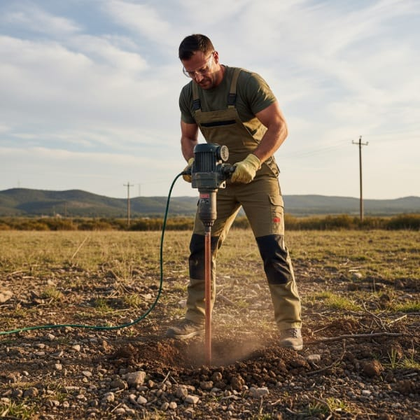
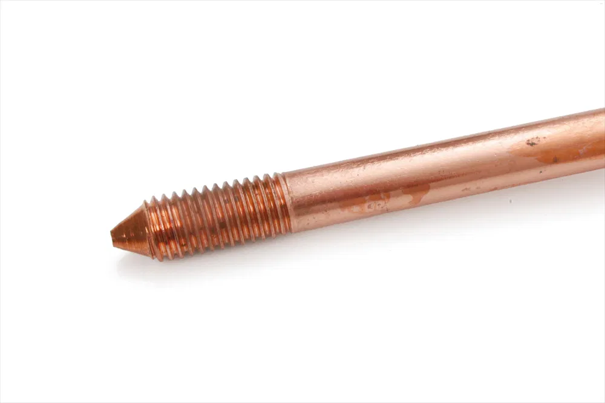
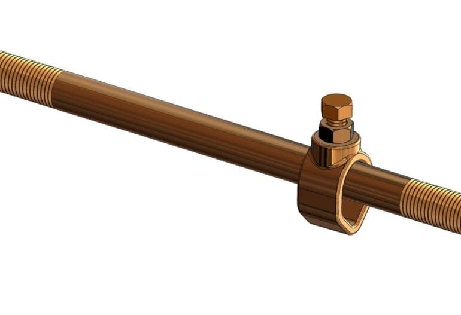
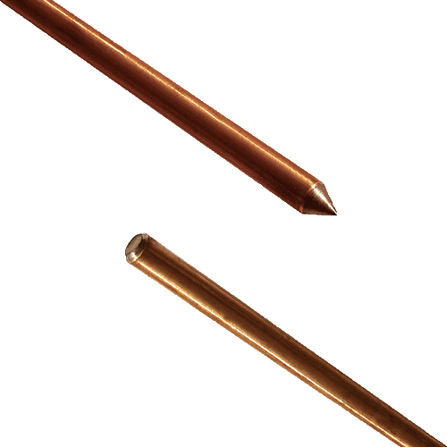

Elektricien Veghel 24 uur ⚡
Een goede aarding is essentieel voor een veilige elektrische installatie. Bij Elektricien Veghel verzorgen wij het professioneel slaan van een aardpen om ervoor te zorgen dat uw installatie voldoet aan alle veiligheidsnormen. Een goed geplaatste aardpen voorkomt gevaarlijke spanningen bij storingen en beschermt u en uw apparatuur tegen elektrische schokken.
085 212 9861
Een aardpen is een metalen staaf, meestal gemaakt van gegalvaniseerd staal of koper, die diep in de grond wordt geslagen om een directe verbinding met de aarde te creëren. Deze verbinding zorgt ervoor dat overtollige elektriciteit veilig wordt afgevoerd, wat essentieel is voor een goed functionerend en veilig elektrisch systeem. Dankzij de aardpen worden elektrische apparaten beschermd tegen overbelasting en biedt het systeem bovendien extra beveiliging bij blikseminslag.
Naast de standaardtoepassing in woningen en gebouwen, wordt een aardpen ook gebruikt in industriële installaties, zonnepanelensystemen, elektrische laadpalen en communicatieapparatuur. Bij zonnepanelen zorgt de aardpen ervoor dat overtollige spanning of statische elektriciteit geen schade aanricht aan de omvormer of panelen. In laadpalen is een goede aarding cruciaal om de veiligheid van elektrische voertuigen te garanderen.


De kosten voor het slaan van een aardpen kunnen variëren en zijn afhankelijk van meerdere factoren. Gemiddeld liggen de prijzen voor het plaatsen en aansluiten van een aardpen tussen de €199 en €700, inclusief materiaal en arbeidskosten. De prijs wordt deels bepaald door de aardpen zelf, maar ook door andere elementen, zoals de bodemsoort, diepte van de plaatsing en de complexiteit van de aansluiting. Wat beïnvloedt de kosten precies? Hieronder leggen we het uit.
Let op: de totale kosten kunnen variëren, afhankelijk van uw specifieke situatie en de werkzaamheden die nodig zijn voor de plaatsing. Bij Elektricien Veghel 24 uur hanteren wij altijd transparante tarieven, zodat u precies weet waar u aan toe bent. U kunt bovendien vooraf een vrijblijvende offerte aanvragen.
Het slaan van een aardpen begint met het zorgvuldig bepalen van de juiste locatie en diepte. Vervolgens gebruikt de elektricien een elektrische boorhamer om de aardpen stap voor stap diep de grond in te slaan. Om een goede aarding te waarborgen, wordt de aardpen doorgaans op een diepte van minimaal 2 tot 3 meter geplaatst. Daarna wordt deze via een koperen aardingsdraad van minimaal 16 mm² verbonden met de meterkast. Met behulp van stevige koppelstukken wordt een stabiele en veilige aansluiting gerealiseerd, zodat de elektrische installatie optimaal beveiligd is.


De grondsoort waarin de aardpen geplaatst wordt, heeft een grote invloed op de uiteindelijke kosten. In een normale, zachte bodem kan de aardpen eenvoudig worden geslagen, terwijl harde klei- of rotsachtige grond meer tijd, moeite en gespecialiseerd gereedschap vereist.
Ook de diepte waarop de aardpen geplaatst moet worden heeft invloed op de totale kosten. Wanneer de aardpen dieper de grond in geslagen moet worden, vraagt dit meer arbeid en soms extra materiaal.
U kunt kiezen tussen een koperen aardpen of een gegalvaniseerde variant. Hoewel koper doorgaans duurder is, biedt het een betere geleiding en een langere levensduur, waardoor het op lange termijn een duurzame keuze is.
Het slaan van een aardpen vereist vakkennis en ervaring. Een professionele elektricien beschikt over de juiste apparatuur en expertise om dit veilig volgens de normen uit te voeren. Hierdoor bent u verzekerd van een betrouwbare installatie.
Het inschakelen van een elektricien brengt uiteraard kosten met zich mee, maar op de lange termijn bespaart u juist geld. Een correct geplaatste aardpen, die diep genoeg in de grond zit, voorkomt schade aan uw elektrische installatie en zorgt ervoor dat uw elektrische apparaten veilig en stabiel functioneren. Zo worden problemen zoals overbelasting of storingen effectief voorkomen.
Het slaan van een aardpen is een essentiële stap voor de veiligheid van uw elektrische systeem. Hoewel de prijs afhankelijk is van verschillende factoren, is dit een waardevolle investering die toekomstige problemen helpt voorkomen. Laat dit specialistische werk uitvoeren door een erkende elektricien, zodat de aardpen veilig, correct en volgens de normen wordt geïnstalleerd. Een goed geslagen aardpen, aangesloten op de juiste groep, garandeert een betrouwbare en veilige stroomvoorziening.

Het inschakelen van een elektricien brengt uiteraard kosten met zich mee, maar op de lange termijn bespaart u juist geld. Een correct geplaatste aardpen, die diep genoeg in de grond zit, voorkomt schade aan uw elektrische installatie en zorgt ervoor dat uw elektrische apparaten veilig en stabiel functioneren. Zo worden problemen zoals overbelasting of storingen effectief voorkomen.
Het slaan van een aardpen is een essentiële stap voor de veiligheid van uw elektrische systeem. Hoewel de prijs afhankelijk is van verschillende factoren, is dit een waardevolle investering die toekomstige problemen helpt voorkomen. Laat dit specialistische werk uitvoeren door een erkende elektricien, zodat de aardpen veilig, correct en volgens de normen wordt geïnstalleerd. Een goed geslagen aardpen, aangesloten op de juiste groep, garandeert een betrouwbare en veilige stroomvoorziening.